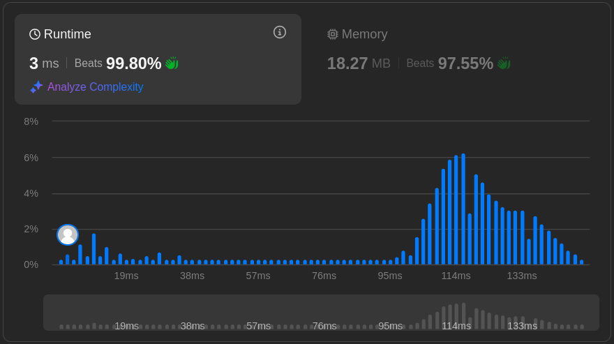

from typing import ListProblem Description
Difficulty: Hard
You are given an array of non-negative integers height, where each element height[i] indicates the height of a vertical bar of width 1. Determine the maximum volume of water that can be contained between these bars assuming equal rainfall from above.
Example 1:
Input: height = [0,1,0,2,1,0,1,3,2,1,2,1]
Output: 6Explanation: See image on the LeetCode website. There a 3 areas in which rain water would collect, with an area of 1, 4, and 1 units, respectively.
Example 2:
Input: height = [4,2,0,3,2,5]
Output: 9
Constraints:
# NeetCode:
1 <= height.length <= 1000
0 <= height[i] <= 1000
# LeetCode:
1 <= height.length <= 20000
0 <= height[i] <= 100000Initial Solution
class BruteForceSolution:
def trap(self, height: List[int]) -> int:
total_area = 0
n = len(height)
for x in range(1, n - 1): # Start from 1 and go to n-2 to avoid edges
left_max = max(height[:x]) # Maximum height to the left of x
right_max = max(height[x + 1:]) # Maximum height to the right of x
# Calculate water trapped on the current block
water_trapped = min(left_max, right_max) - height[x]
if water_trapped > 0:
total_area += water_trapped
return total_areaMy brute force solution passed NeetCode. However, with \(O(n^2)\) time complexity, it’s insufficient for LeetCode. It passed 322 of 323 test cases on LeetCode, but timed out on the last test. The algorithm calls max() repeatedly within the loop, resulting in quadratic time complexity.
We can improve it a little by trading off some space for time. In the solution below, two additional lists are used to store the maximum to the left and right of the ‘height’ value at x.
class Solution:
def trap(self, height: List[int]) -> int:
total_area = 0
n = len(height)
if n <= 2: # Less than 3 heights can't trap any water
return 0
# Create lists to store the maximums
left_max = [0] * n
right_max = [0] * n
# Store the maximum heights at the two edges
left_max[0] = height[0]
right_max[n - 1] = height[n - 1]
# Store the maximum heights left and right of each position
# working forwards and backwards in the same loop for efficiency
for x in range(1, n):
left_max[x] = max(left_max[x - 1], height[x])
right_max[n - 1 - x] = max(right_max[n - x], height[n - 1 - x])
# Calculate water trapped
for x in range(1, n - 1):
water_trapped = min(left_max[x], right_max[x]) - height[x]
if water_trapped > 0:
total_area += water_trapped
return total_areaTest function
def test_trap(solution_class):
"""Test function for the trap method. Not extensive"""
heights0 = [0]
heights1 = [1, 1]
heights2 = [0, 1, 0, 2, 1, 0, 1, 3, 2, 1, 2, 1]
heights3 = [4, 2, 0, 3, 2, 5]
heights_list = [heights0, heights1, heights2, heights3]
expected = [0, 0, 6, 9]
solution = solution_class()
results = [solution.trap(heights) for heights in heights_list]
if results == expected:
print("Tests passed")
else:
print("Tests failed")
print("Expected:", expected)
print("Got:", results)test_trap(BruteForceSolution)
test_trap(Solution)Tests passed
Tests passedInitial Results
The latter attempt passed LeetCode but with an abysmal runtime beating only 20.5% of submissions. Memory use was also poor, beating only 32.5% of submissions.
The overall worst-case complexity here is:
- Time complexity: \(O(n)\) consisting of two loops each in \(O(n)\) time
- Space Complexity: \(O(n)\) due to the two additional lists of \(O(n)\) space
Let’s try to improve on the solution using a two-pointer algorithm…
class Solution:
def trap(self, height: List[int]) -> int:
n = len(height)
if n <= 2:
return 0
left = 0
right = len(height) - 1
left_max = height[left]
right_max = height[right]
water = 0
while left < right:
if left_max < right_max:
left += 1
left_max = max(left_max, height[left])
water += left_max - height[left]
else:
right -= 1
right_max = max(right_max, height[right])
water += right_max - height[right]
return watertest_trap(Solution)Tests passedFinal Results
This two-pointer solution was a lot better and apparently beat 99.8% of submissions on time and 97.6% on memory. LeetCode’s results tend to vary a little, so I don’t fully believe them. A real comparison using timeit would likely be more accurate. I also tried to avoid storing the additional variable n, by placing that definition len(height) into the next line instead, but it then ran marginally slower (11 ms). In any case, this was a nice attempt.
Worst-case complexity is:
- Time complexity: \(O(n)\) as the pointers traverse the input list only once
- Space complexity: \(O(1)\) as no additional space is used that would grow with input size

NeetCode Solution
class Solution:
def trap(self, height: List[int]) -> int:
if not height:
return 0
l, r = 0, len(height) - 1
leftMax, rightMax = height[l], height[r]
res = 0
while l < r:
if leftMax < rightMax:
l += 1
leftMax = max(leftMax, height[l])
res += leftMax - height[l]
else:
r -= 1
rightMax = max(rightMax, height[r])
res += rightMax - height[r]
return resNeetcode’s solution has slightly different code for early exit, but the main algorithm is essentially the same. Worst-case time and space complexity are the same too.